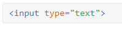
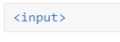
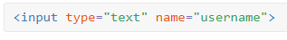
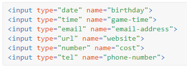
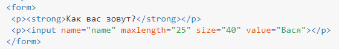
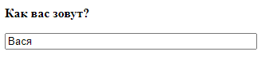
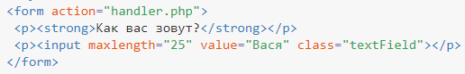
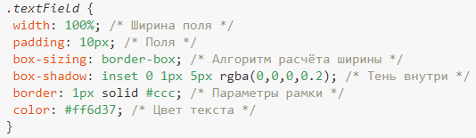
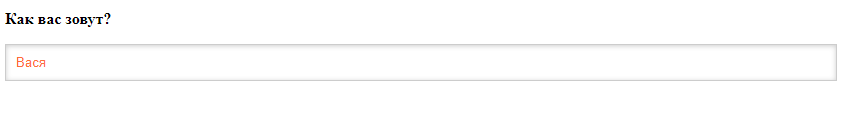
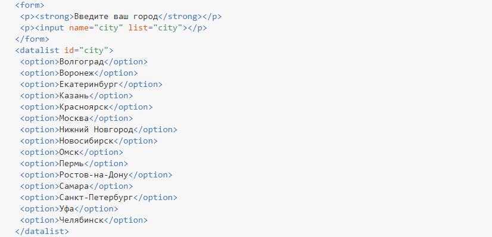

Текстовое поле
Почти всем формам требуется текстовый ввод от пользователей, чтобы ввести своё имя, адрес электронной почты, пароль, адрес и др. Текстовые поля формы приходят в разных вариантах.
| Текст | <input type="text"> | Допускает любой тип символов | |
|---|---|---|---|
| <input type="email"> | Может показывать предупреждение, если введён неверный email | ||
| Пароль | <input type="password"> | Символы показываются как точки | |
| Число | <input type="number"> | Могут быть использованы клавиши вверх/вниз | |
| Телефон | <input type="tel"> | Может сработать автозаполнение | |
| Многострочный текст | <textarea></textarea> | Может быть изменён размер поля |
Хотя эти поля очень похожи и позволяют пользователям вводить текст любого рода (даже неправильный), их тип обеспечивает специфическую семантику для ввода, определяя, какую информацию поле должно содержать.
Браузеры могут впоследствии немного изменить интерфейс элемента управления, чтобы повысить интерактивность или подсказать, какое содержимое ожидается.
К примеру, поле для пароля показывает точки вместо символов. А поле для чисел позволяет увеличивать/уменьшать значение с помощью клавиш вверх и вниз
Однострочное текстовое поле предназначено для ввода строки символов с помощью клавиатуры. Одним из основных элементов, используемых для получения текста от пользователей, является элемент <input>. Данный элемент включает атрибут type для определения, какой тип информации будет получен в элементе управления. Наиболее популярное значение атрибута type — это text, который обозначает ввод одной строки текста.

Значение атрибута type для <input> по умолчанию определено как text, поэтому его можно не указывать явно. Таким образом, текстовое поле задаётся просто как <input>.

Наряду с установкой атрибута type, хорошей практикой будет также дать элементу <input> атрибут name. Значение атрибута name применяется в качестве имени элемента управления и отправляется вместе с входными данными на сервер.

Элемент <input> является самостоятельным, то есть он задействует только один тег и не оборачивает какой-либо контент. Значение элемента обеспечивается его атрибутами и их соответствующими значениями.
Первоначально было только два текстовых значения атрибута type — text и password (для ввода паролей), однако HTML5 привёз с собой несколько новых значений атрибута type.
Эти значения были добавлены, чтобы обеспечить чёткое смысловое значение для полей ввода, а также предоставить лучшее управление пользователям. Если браузер не понимает одно из этих HTML5-значений атрибута type, он автоматически вернётся к значению text. Ниже приведён список новых типов HTML5.
- color
- date
- datetime
- month
- number
- range
- search
- tel
- time
- url
- week
Следующие элементы <input> показывают некоторые из этих значений атрибута type из HTML5 в использовании

Допустимые атрибуты текстового поля перечислены в табл. 1.
| Атрибут | Описание |
|---|---|
| name | Имя поля, предназначено для того, чтобы обработчик формы мог его идентифицировать. |
| disabled | Блокирует поле для ввода текста и не отправляет данные на сервер. |
| form | Идентификатор формы для связывания текстового поля с элементом <form>. |
| type | Для текстового поля мы указываем значение text или вообще не пишем этот атрибут. |
| maxlength | Устанавливает максимальное число символов, которое может быть введено пользователем в текстовом поле. Когда это количество достигается при наборе, дальнейший ввод становится невозможным. Если данный атрибут опустить, то можно вводить строку длинее самого поля. |
| readonly | Блокирует поле для ввода текста. |
| size | Ширина текстового поля, которая определяется числом символов моноширинного шрифта. Обычно не указывают, потому что через стили задать желаемые размеры проще и точнее. |
| value | Начальный текст, отображаемый в поле. |
| autocomplete | Введённый ранее текст запоминается браузером и подставляется при следующем вводе. |
| autofocus | Поле получает фокус после загрузки документа. |
| list | Значение атрибута id элемента <datalist>, для связи с этим элементом. |
| pattern | Шаблон ввода текста. |
| required | Указывает, что поле является обязательным для заполнения. |
| placeholder | Добавляет подсказку, которая исчезает при вводе текста. |
| dirname | Имя переменной, которая отправляется на сервер и автоматически получает значение ltr (для текста слева направо) или rtl (для текста справа налево). |
Большинство атрибутов являются типовыми и применяются к другим элементам формы. Создание текстового поля показано в примере 1.
Пример 1. Текстовое поле
 
Ширина текстового поля — величина нестабильная и в разных браузерах может меняться в небольших пределах. Для формы, которая располагается в колонке ограниченной ширины, подобные изменения приводят к нарушению исходного макета. Так что лучше вообще отказаться от использования атрибута size и задать параметры поля через стили. К тому же CSS позволяет изменять цвет фона, тип шрифта и рамки вокруг поля, как показано в примере 2.
Пример 2. Изменение вида текстового поля
 

Поскольку общая ширина элемента суммируется из значений width, padding и border, то мы получим поле, которое будет выходить за пределы окна браузера. Чтобы этого не произошло, добавлено свойство box-sizing со значением border-box, оно изменяет алгоритм расчёта ширины и ширина поля будет равна 100% независимо от значений других свойств.
Для элемента <input> есть простые правила, которые следует соблюдать:
- <input> нельзя вкладывать внутрь ссылки ;<a>
- <input> нельзя вкладывать внутрь кнопки ;<button>
- атрибут list должен ссылаться на элемент .<datalist>
Элемент <datalist> позволяет создать список подсказок, который появляется при наборе текста. Подобное можно наблюдать в поисковой системе Яндекс или Гугл, когда вы вводите поисковый запрос.
<datalist> пишется обычно за пределами формы, каждый пункт при этом создаётся элементом <option>, а затем полученный список связывается с текстовым полем с помощью атрибута list, значением которого выступает значение id у <datalist> (пример 2).
Пример 2. Подсказки для текстового поля

При наборе первых букв показываются подходящие варианты из списка. Пункт списка можно выбрать курсором мыши или с помощью стрелок на клавиатуре и он добавится в текстовое поле. При этом можно вводить собственный текст или редактировать уже добавленный.